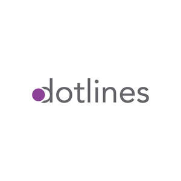

Trade Mark Journal No.2025/042 17 October 2025
UK00004274458 7 October 2025 (9,38,42)

- Class 9
- Internet telephones; Internet phones; Internet servers; Internet access software; Internet Protocol televisions; Internet messaging software; Computer programs for using the internet and the worldwide web; IP (Internet Protocol) televisions; Software downloadable from the internet; Computer software downloaded from the internet; Computer software downloadable from the internet; Computer software supplied from the Internet; Digital music downloadable provided from MP3 internet web sites; Downloadable digital music provided from MP3 Internet web sites; Digital music [downloadable] provided from mp3 web sites on the internet; Internet bots being computer programs; Computer application software for streaming audio-visual media content via the internet; Computer software supplied on the Internet; Computer games programmes downloaded via the internet; Digital music downloadable from the Internet; Computer software to enable the provision of electronic media via the Internet; Application software for social networking services via internet; Internet of Things [IoT] gateways; Digital books downloadable from the Internet.
- Class 38
- Providing Internet chatrooms and Internet forums; Internet communication; Computer communication and Internet access; Providing internet chatrooms; Streaming of television over the Internet; Internet access services; Internet telephony services; Provision of access to computer networks and the internet; Internet communication services; Providing access to digital music web sites on the internet; Providing access to Internet chatrooms; Internet broadcasting services; Providing access to mp3 web sites on the internet; Communications via a global computer network or the internet; Providing access to web sites on the internet; Providing access to digital music websites on the Internet; Chatrooms [Providing internet -]; Providing access to mp3 websites on the internet; Providing access to MP3 websites on the Internet; Providing telecommunications connections to the Internet; Providing access to gambling and gaming websites on the internet; Providing user access to computer networks and the Internet; Wireless transfer of data via the Internet; Provision of telecommunications connections to the internet or computer databases; Internet provider services; Providing telecommunication connections to the internet or databases; Provision of telecommunications links to computer databases and websites on the Internet; Internet access provider services; Provision of telecommunication access and links to computer databases and to the internet; Provision of telecommunication access and links to computer databases and the internet; Provision of access to Internet protocol TV; Internet based telecommunication services; Providing access to Internet forums; Transmission of multimedia content via the Internet; Providing internet access; Providing access to the internet; Provision of access to the internet; Providing telecommunications connections to the internet or databases; Electronic transmission of computer programs via the internet; Providing access to the Internet and other communications networks; Internet services providers (isps); Telecommunications services provided via the Internet, intranet and extranet; Providing telecommunications connections to the Internet in a cafe environment; Internet radio broadcasting services; Transmission of data via the Internet; Transmission of user-generated content via the Internet; Digital transmission of data via the Internet; Broadcasting services relating to Internet protocol TV; Providing access to websites on the Internet or any other communications network; Providing multiple-user wireless access to the Internet; Broadcasting of programmes via the internet; Provision of telecommunications access to databases and the internet; Transmission of video data via the Internet; Voice over Internet Protocol [VoIP] services; Providing Internet chat rooms; Streaming of video material on the internet; Electronic communication by means of chatrooms, chat lines and Internet forums; Providing telecommunications links to the Internet or databases; Providing access to e-commerce platforms on the Internet; Arranging access to databases on the internet; Broadcasting of television programs via the Internet; Mail services utilising the internet and other communications networks.
- Class 42
- Programming of software for Internet portals, chatrooms, chat lines and Internet forums; Creation of internet web sites; Computer programming for the internet; Rental of software for Internet access; Development of software solutions for internet providers and internet users; Hosting websites on the Internet; Internet café services (computer rental); Hosting of digital content on the Internet; Hosting of portals on the internet; Hosting internet sites for others; Installation of Internet access software; Hosting of communication platforms on the internet; Internet web site design services; Hosting platforms on the Internet; Hosting of platforms on the Internet; Hosting of e-commerce platforms on the Internet; Compilation of web pages for the Internet; Maintenance of software for Internet access; Internet security consultancy; Design of Internet pages; Updating Internet pages.
AUDRA SOLUTIONS LIMITED